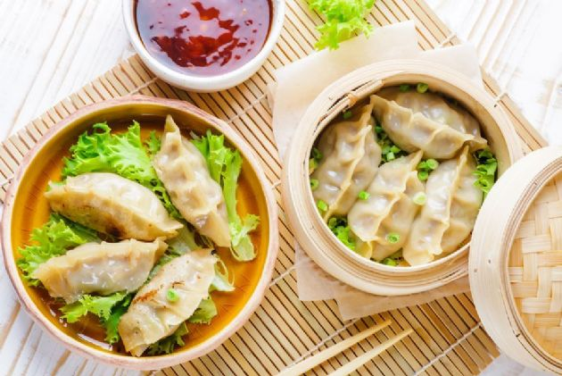

Mandoo

What is Mandoo (or Mandu)?
Mandoo, also known as mandu, refers to Korean-style dumplings. They are typically filled with a mixture of ground meat (often pork),
vegetables, and seasonings, and then steamed, boiled, or pan-fried. The dumpling wrappers can be made with flour, water, and salt or with
other ingredients like rice flour or potato starch to create a chewier texture. There are many variations of mandoo fillings, including kimchi,
seafood, and tofu, and they can be served as a snack or as a main course, often with dipping sauces like soy sauce, vinegar, or chili paste. Mandoo
is a popular dish in Korean cuisine and can be found in many Korean restaurants and markets around the world.
Ingredients
- 1 pound lean ground beef or pork
- 1 medium onion, finely chopped
- 1 cup finely chopped cabbage (about 1/2 of a small cabbage head), parboiled
- 1/2 cup chopped tofu (1 small cake)
- 4 ounces mung bean noodles soaked in hot water 15 minutes (or fully cooked sweet potato noodles) and chopped
- 3 cloves garlic, finely chopped
- 2 tablespoons soy sauce
- 1 tablespoon sesame oil
- 1 teaspoon kosher salt
- 1 teaspoon ground black pepper
- 1 package (40) circular mandoo wrappers or Japanese gyoza or Chinese dumpling wrappers
- Dumpling dipping sauce, for serving
Steps
- In a large mixing bowl, gently combine the ground beef or ground pork, onion, cabbage, tofu, and noodles.
- In a separate small bowl, combine the garlic, soy sauce, sesame oil, salt, and pepper.
- Pour seasoning mixture over meat and vegetables and mix with hands to combine.
- Place about 1 tablespoon of filling in the center of a dumpling wrapper.
- Dip your finger in water and wet the perimeter of half of the wrapper.
- Fold the wrapper in half, pressing to seal and then crimp the edges. Repeat until the filling is gone.
- You can steam, boil, fry, or sauté the dumplings as you wish.
- Serve with a basic dipping sauce or a spicy sauce.
Original Recipe